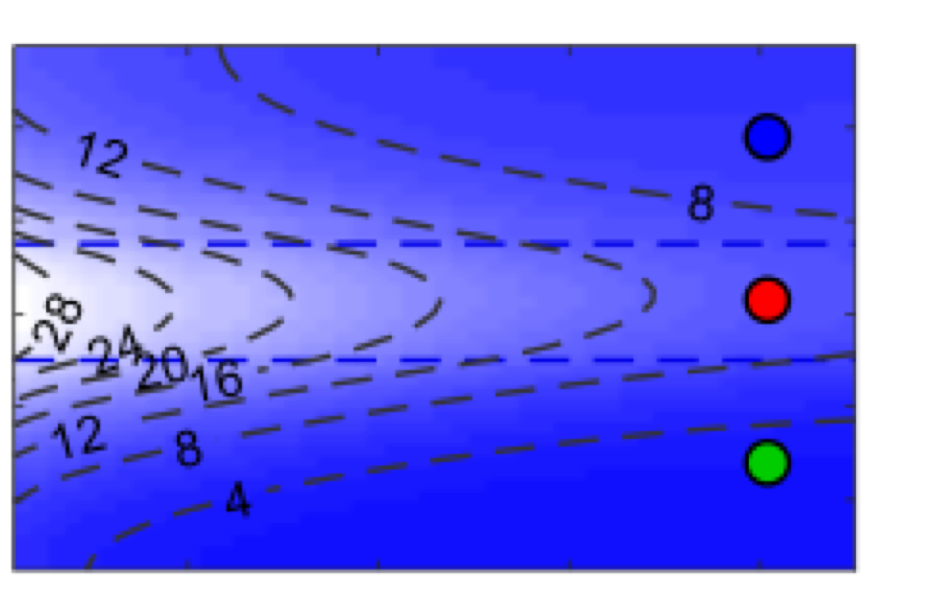

Education
University of Illinois at Urbana-Champaign
Relevant Courses
Machine Learning for Signal Processing, Numeric Fluid Dynamics, Numerical Analysis, Intro to Data Mining, Physicochemical Hydrodynamics, Electrochemical Methods, PDE, Advanced Surface Science
Relevant Work Experiences
-Develop numerical models to predict electronic and ionic transport within electrochemical devices.
-Calibrate models by extracting fitting parameters based on experimental results.
-Design and fabricate an electrochemical desalination device for model validation.
-Solve coupled non-linear system of equations numerically in Matlab and Python.
-Setup a redox flow-cell for energy storage and implement system control and data acquisition.
-System Control and signal processing
-Design algorithms for experimental system control and automation of a high pressure desalination system.
-Implemented automatic data collection/monitoring and remote control.
Relevant Projects

Numeric simulation - Develop high resolution numerical models to predict variation of voltage, current, salinity, and energy efficiency for an electrochemical desalination device using Matlab and Python. The model involves solving coupled non-linear equations that describe phenomenon of electrochemistry, hydrodynamics, and charge transport.

Self-driving car(in progress) - Apply classification methods such as decision tree, support vector machines (SVM), and deep neural networks to identify images of traffic signs. Design and implement control algorithms to achieve autopilot drving on a pre-defined lane.
Publications
X. Shang, R.D. Cusick, K.C. Smith, A combined modeling and experimental study assessing the impact of flow mode on charge and energy efficiency in capacitive deionization, submitted to the Journal of Electrochemical Society, (09/2017)
X. Shang, K. Smith, R. Cusick, Minimizing energy consumption in constant-current capacitive deionization by modelling local charging, transport and leakage current, in preparation, (2017)
R. Guha, X. Shang, A.L. Zydney, D. Velegol, M. Kumar, Diffusiophoresis contributes significantly to colloidal fouling in low salinity reverse osmosis systems, Journal of Membrane Science, (2015)
X. Shang, H.-C. Kim, J.H. Huang, B.A. Dempsey, Treating laundry waste water using coagulation, sedimentation, and membrane filtration. Separation and purification technology (2015)
H.-C. Kim, X. Shang, J.-H. Huang, B.A. Dempsey, Coagulation strategies to decrease fouling and increase critical flux and contaminant removal in microfiltration of laundry wastewater, Journal of Membrane Science, (2014)
Teaching Experiences
Selected Presentations
Xia Shang, Kyle Smith, Roland Cusick, Modeling energy loss in membrane capacitive deionization systems with a high resolution one-dimensional equivalent circuit, ACS, Philadelphia, PA, 08/2016
Xia Shang, Kyle Smith, Jeremy Guest, Roland Cusick, Energy efficiency modelling for capacitive deionization and membrane capacitive deionization, DesalTech2015, San Diego, CA, 08/2015
Xia Shang, Roland Cusick, Anode doped poly(3,4-ethylenedioxythiophene) asymmetric carbon electrodes for capacitive deionization, DesalTech2015, San Diego, CA, 08/2015
Xia Shang, Roland Cusick, Contribution of pseudocapacitance of poly(3,4-ethylenedioxythiophene) to the performance of capcitive deionization, AEESP, New Haven, CT, 06/2015
Xia Shang, Junhua Jiang, and Roland Cusick, Fabrication of composite capacitive deionization electrodes using biochar materials and conductive polymer, IAP2014 "Interfaces in Water and Environmental Science”, the Netherlands, 05/2014